10 Data import, pre-processing, and transformation
This chapter focuses on importing data from spreadsheets into R and covers essential techniques for manipulating, transforming, and summarizing data effectively. We also introduce the powerful native forward pipe operator |>, which streamlines the process by allowing operations to be chained together in a clear and concise manner. Additionally, we present and explain the process of reshaping data between wide and long formats in R.
10.1 Importing data
Spreadsheets are commonly used to organize structured, rectangular data and are available in formats such as Excel, CSV, or Google Sheets. Each format offers unique features, from Excel’s comprehensive capabilities to CSV’s simplicity and Google Sheets’ collaborative editing. In this textbook, most datasets are provided in Excel files (.xlsx) and typically have the following basic characteristics:
- The first line in the file is a header row, specifying the names of the columns (variables).
- Each value has its own cell.
- Missing values are represented as empty cells.
For example, Figure 10.1 shows a screenshot of data from a single sheet of an Excel file. The dataset, named shock_index, contains information about the characteristics of 30 adult patients suspected of having a pulmonary embolism. The following variables were recorded:
- sex: F for females and M for males
- Age: age of the patients in years
- SBP: systolic blood pressure in mmHg
- HR: resting heart rate in beats/min
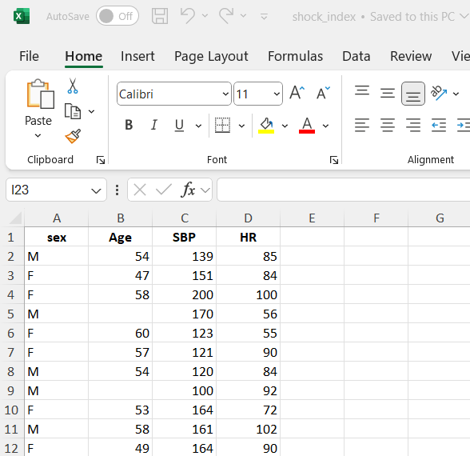
10.1.1 Importing data from Excel using the RStudio Interface
To import data using the RStudio interface, we navigate to the Environment pane, where we’ll find the “Import Dataset” button. Clicking this button will prompt a dropdown menu with options to import data from various file formats such as CSV, Excel, or other common formats. We select “From Excel…” (Figure 10.2).
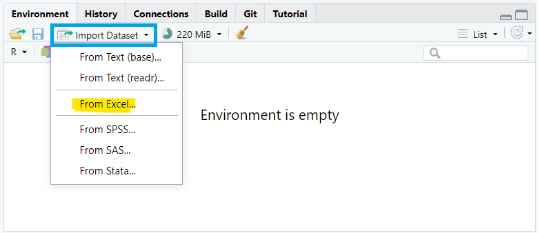
A dialog box then appears, enabling us to navigate our file system and specify the desired dataset (Figure 10.3). Once selected, we confirm the import by clicking “Open”. Finally, we proceed by clicking the “Import” button, which imports the selected dataset into our RStudio session.”
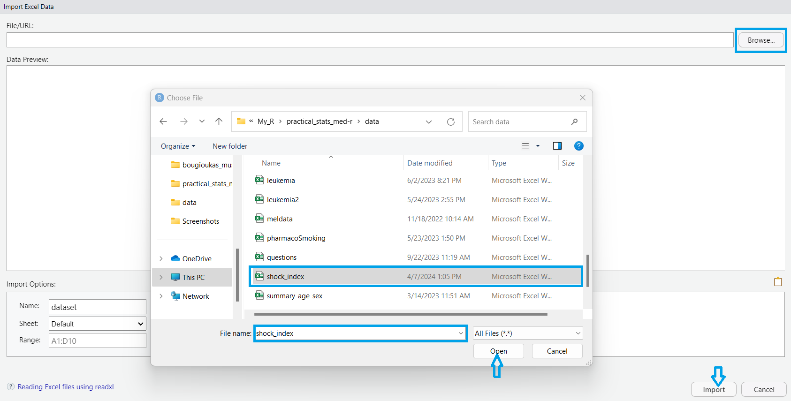
After a successful import, the dataset will be displayed in the Environment pane, allowing for further manipulation.
10.1.2 Importing data from Excel into R with commands
Alternatively, if the dataset is saved in the subfolder named “data” of our RStudio project (see also Chapter 2), we can read it with the read_excel() function from readxl package as follows:
dat <- read_excel(here("data", "shock_index.xlsx"))The path of a file (directory) is its location in the file system (address). As we have previously discussed, there are two kinds of paths.
- absolute paths such as “
C:/My_name/../my_project/data/shock_index.xlsx” and - relative paths such as “
data/shock_index.xlsx”.
The function here() allows us to navigate throughout each of the subfolders and files within a given RStudio Project using relative paths (see also Chapter 5).
Using head() is a convenient way to get a quick overview of our dataset and check for any obvious issues before proceeding with further analysis or data manipulation.
head(dat)# A tibble: 6 × 4
sex Age SBP HR
<chr> <dbl> <dbl> <dbl>
1 M 54 139 85
2 F 47 151 84
3 F 58 200 100
4 M NA 170 56
5 F 60 123 55
6 F 57 121 90By default, the first six rows of the data frame are displayed. To view a different number of rows (e.g., the first ten), we can specify the desired number as an argument, like this: head(dat, 10).
Additionally, when working with large datasets in R, it’s often useful to inspect the last few rows of a data frame. The tail() function is used for this purpose:
tail(dat)# A tibble: 6 × 4
sex Age SBP HR
<chr> <dbl> <dbl> <dbl>
1 M 58 119 87
2 F 48 104 93
3 F 55 164 69
4 M 59 92 119
5 F 48 127 109
6 F 51 136 60Now, the last six rows of the data frame are displayed in the R console.
10.2 Pre-processing data
10.2.1 Adding an unique identifier for each observation
A unique identifier for each observation is often useful for various data manipulation and analysis tasks. In R, we can add row numbers starting from 1 to the number of rows in our data frame using the rowid_to_column() function from the tibble package:
dat <- rowid_to_column(dat)
head(dat)# A tibble: 6 × 5
rowid sex Age SBP HR
<int> <chr> <dbl> <dbl> <dbl>
1 1 M 54 139 85
2 2 F 47 151 84
3 3 F 58 200 100
4 4 M NA 170 56
5 5 F 60 123 55
6 6 F 57 121 9010.2.2 Renaming variables and cleaning names
Choosing informative column names can significantly enhance the clarity and interpretability of our dataset. For instance, renaming rowid to patient_ID clarifies that this column serves as a unique identifier for each patient. Likewise, renaming HR to Heart.Rate offers a more intuitive and informative label for the heart rate variable.
# A tibble: 6 × 5
patient_ID sex Age SBP Heart.Rate
<int> <chr> <dbl> <dbl> <dbl>
1 1 M 54 139 85
2 2 F 47 151 84
3 3 F 58 200 100
4 4 M NA 170 56
5 5 F 60 123 55
6 6 F 57 121 90However, it’s crucial to ensure that the column names are consistent with the naming conventions in R. This can be achieved by using the clean_names() function from the janitor package, which standardizes column names by converting them to lowercase, removing special characters, and replacing spaces with underscores.
dat <- clean_names(dat)
head(dat)# A tibble: 6 × 5
patient_id sex age sbp heart_rate
<int> <chr> <dbl> <dbl> <dbl>
1 1 M 54 139 85
2 2 F 47 151 84
3 3 F 58 200 100
4 4 M NA 170 56
5 5 F 60 123 55
6 6 F 57 121 9010.2.3 Converting to the appropriate data type
We might have noticed that the categorical variable sex is coded as F (for females) and M (for males), so it is recognized of character type. We can use the factor() function to encode a variable as a factor:
10.2.4 Handling missing values
Upon reviewing the dataset, it’s apparent that there are missing values in the age variable, denoted as NA. Various techniques exist to handle missing values in data such as excluding observations with any missing values, substituting with a constant value (mean, median, mode), or employing multiple imputation methods. The choice of method depends on factors such as the proportion of missing data, its distribution, and understanding the underlying mechanism behind the missingness (whether it’s random or non-random) (Altman and Bland 2007; Heymans and Twisk 2022).
While this introductory textbook primarily uses datasets without missing values, it’s important to note that missing data present a frequent challenge in real-world data analysis. Fortunately, several R packages are tailored to address this issue, including: mice, VIM, naniar, and Hmisc.
10.3 Transforming data
10.3.1 Subsetting observations (rows)
Subsetting observations (rows) is a common data manipulation task in data analysis, allowing us to focus on specific subsets of data that meet particular criteria. This process involves selecting rows from a dataset based on conditions we specify.
10.3.1.1 Select observations by indexing position within [ ]
Just as we use square brackets [row, column] to select elements from matrices, we apply the same approach to select elements from a data frame. For example, by specifying the row indices [5:10, ] within the brackets, we can select the data for rows 5 through 10:
dat1 <- dat[5:10, ]
dat1# A tibble: 6 × 5
patient_id sex age sbp heart_rate
<int> <fct> <dbl> <dbl> <dbl>
1 5 female 60 123 55
2 6 female 57 121 90
3 7 male 54 120 84
4 8 male NA 100 92
5 9 female 53 164 72
6 10 male 58 161 102
10.3.1.2 Select observations by using logical conditions inside [ ]
By applying logical conditions, such as greater than (>), less than (<), equal to (==), or combinations of these, we can filter observations that meet specific criteria.
- For example, we can filter the data to find patients whose age is greater than 55, as follows:
dat2 <- dat[dat$age > 55, ]
dat2# A tibble: 13 × 5
patient_id sex age sbp heart_rate
<int> <fct> <dbl> <dbl> <dbl>
1 3 female 58 200 100
2 NA <NA> NA NA NA
3 5 female 60 123 55
4 6 female 57 121 90
5 NA <NA> NA NA NA
6 10 male 58 161 102
7 13 female 57 118 89
8 17 male 56 126 107
9 19 male 59 138 85
10 20 male 56 153 85
11 24 female 57 121 90
12 25 male 58 119 87
13 28 male 59 92 119Step-by-step explanation: First, the code evaluates the expression dat$age > 55 for each row in the data frame, generating a logical vector where TRUE indicates patients older than 55 and FALSE indicates others. This logical vector is then used inside the square brackets [ ] to subset the data frame, selecting only the rows where the condition is TRUE. The resulting subset is assigned to the new object dat2. Note that when there are missing values in the age column, the corresponding rows in dat2 contain NA values.
Similarly, we can use the which() function that returns the indices where the condition age > 55 is TRUE. However, in this case, the missing values are treated as FALSE, resulting in the exclusion of rows where age in the original data is NA.
dat3 <- dat[which(dat$age > 55), ]
dat3# A tibble: 11 × 5
patient_id sex age sbp heart_rate
<int> <fct> <dbl> <dbl> <dbl>
1 3 female 58 200 100
2 5 female 60 123 55
3 6 female 57 121 90
4 10 male 58 161 102
5 13 female 57 118 89
6 17 male 56 126 107
7 19 male 59 138 85
8 20 male 56 153 85
9 24 female 57 121 90
10 25 male 58 119 87
11 28 male 59 92 119- If our objective is to analyze data for female patients aged over 55, we can create a subset by incorporating the logical
&operator to combine the conditions for age and sex.
dat4 <- dat[which(dat$age > 55 & dat$sex == "female"), ]
dat4# A tibble: 5 × 5
patient_id sex age sbp heart_rate
<int> <fct> <dbl> <dbl> <dbl>
1 3 female 58 200 100
2 5 female 60 123 55
3 6 female 57 121 90
4 13 female 57 118 89
5 24 female 57 121 90The resulting data frame contains only the rows that meet both of these conditions, namely females over 55 years old.
10.3.1.3 Select observations using the filter() function from dplyr
The dplyr package also provides the filter() function for selecting observations.
- Selecting rows where age is greater than 55:
dat5 <- filter(dat, age > 55)
dat5# A tibble: 11 × 5
patient_id sex age sbp heart_rate
<int> <fct> <dbl> <dbl> <dbl>
1 3 female 58 200 100
2 5 female 60 123 55
3 6 female 57 121 90
4 10 male 58 161 102
5 13 female 57 118 89
6 17 male 56 126 107
7 19 male 59 138 85
8 20 male 56 153 85
9 24 female 57 121 90
10 25 male 58 119 87
11 28 male 59 92 119- Selecting rows where age is greater than 55 and patient is female:
dat6 <- filter(dat, age > 55 & sex == "female")
dat6# A tibble: 5 × 5
patient_id sex age sbp heart_rate
<int> <fct> <dbl> <dbl> <dbl>
1 3 female 58 200 100
2 5 female 60 123 55
3 6 female 57 121 90
4 13 female 57 118 89
5 24 female 57 121 90The above code is equivalent to the following command:
filter(dat, age > 55, sex == "female")IMPORTANT
When multiple logical expressions are separated by a comma within the filter() function, they are effectively combined using the & operator.
10.3.2 Reordering observations (rows)
Another useful data manipulation involves sorting observations in ascending or descending order of one or more variables (columns). When multiple column names are provided, each additional column helps resolve ties in preceding columns’ values.
- For example, to arrange the rows of our data based on the values of
sbpin ascending order (the default), we can run the following code:
# A tibble: 6 × 5
patient_id sex age sbp heart_rate
<int> <fct> <dbl> <dbl> <dbl>
1 16 male 48 92 122
2 28 male 59 92 119
3 8 male NA 100 92
4 26 female 48 104 93
5 15 female 50 109 142
6 13 female 57 118 89- To rearrange the data in descending order based on
sbp, we can use thedesc()function within the arrange() function:
# A tibble: 6 × 5
patient_id sex age sbp heart_rate
<int> <fct> <dbl> <dbl> <dbl>
1 21 male 48 201 104
2 3 female 58 200 100
3 4 male NA 170 56
4 22 female 52 170 57
5 9 female 53 164 72
6 11 female 49 164 90The above code is equivalent to the following command:
arrange(dat, -sbp) # The minus sign indicates descending order- We can also sort the data in ascending (or descending) order based first on the values in the column
sbpand then on the values in the columnheart_rate.
# A tibble: 6 × 5
patient_id sex age sbp heart_rate
<int> <fct> <dbl> <dbl> <dbl>
1 28 male 59 92 119
2 16 male 48 92 122
3 8 male NA 100 92
4 26 female 48 104 93
5 15 female 50 109 142
6 13 female 57 118 89Notably, two patients (IDs 16 and 28) share the lowest systolic blood pressure of 92 mmHg. When sorting in ascending order, if multiple patients have the same systolic blood pressure, these observations are further sorted by heart rate, with lower heart rate taking precedence. In this case, patient 28, with a heart rate of 119 beats/min, is listed before patient 16, whose heart rate is 122 beats/min.
10.3.3 Subsetting variables (columns)
When working with data frames, selecting specific variables (columns) for analysis is a common task. For instance, suppose we want to select only the sex, age, and heart_rate variables from the data frame.
10.3.3.1 Select variables by indexing their name within [ ]
Subsetting variables can be achieved by indexing the variables’ names within [ ], as follows:
10.3.3.2 Select variables by indexing position within [ ]
By specifying the column indices, such as c(2, 3, 5), within brackets, we can select the data in columns 2, 3, and 5 as follows:
# A tibble: 6 × 3
sex age heart_rate
<fct> <dbl> <dbl>
1 male 54 85
2 female 47 84
3 female 58 100
4 male NA 56
5 female 60 55
6 female 57 90Or we can exclude the variables in the first and forth position.
10.3.3.3 Select variables using the select() function from dplyr
In select() function we pass the data frame first and then the variables separated by commas. Quotes are optional for column names that don’t contain special characters or spaces.
# A tibble: 6 × 3
sex age heart_rate
<fct> <dbl> <dbl>
1 male 54 85
2 female 47 84
3 female 58 100
4 male NA 56
5 female 60 55
6 female 57 90Or we can exclude the variables patient_id and sbp.
10.3.4 Creating new variables
Data analysis often involves creating new variables within data frames based on existing variables. This data transformation process involves adding new columns to a data frame derived from the values of one or more existing columns.
Suppose we want to compute a new variable representing the ratio of heart rate to systolic blood pressure (HR/sbp), which we will call shock_index. We can achieve this by using the mutate() function from dplyr package, as follows:
# A tibble: 6 × 6
patient_id sex age sbp heart_rate shock_index
<int> <fct> <dbl> <dbl> <dbl> <dbl>
1 1 male 54 139 85 0.612
2 2 female 47 151 84 0.556
3 3 female 58 200 100 0.5
4 4 male NA 170 56 0.329
5 5 female 60 123 55 0.447
6 6 female 57 121 90 0.744IMPORTANT
By default, the mutate() function adds the new variable as the last column in the tibble.
Our next step involves categorizing the newly created shock_index variable based on the defined normal range (0.5 to 0.7 beats/mmHg \(\cdot\) min). This can be done using the case_when() function from the dplyr package.
# A tibble: 6 × 7
patient_id sex age sbp heart_rate shock_index shock_index1
<int> <fct> <dbl> <dbl> <dbl> <dbl> <chr>
1 1 male 54 139 85 0.612 normal
2 2 female 47 151 84 0.556 normal
3 3 female 58 200 100 0.5 normal
4 4 male NA 170 56 0.329 low
5 5 female 60 123 55 0.447 low
6 6 female 57 121 90 0.744 high However, it’s important to keep in mind that transforming continuous variables into categories may simplify interpretation, but it often results in information loss.
10.3.5 Using the native pipe operator in a sequence of commands
Given that each verb in dplyr specializes in a particular task, addressing complex queries often typically involves integrating several verbs, a process simplified by using the native forward pipe operator, |>.
For example, we want to filter the original dataset to include only rows where the shock index category is “low” or “high”, using a sequence of dplyr verbs.
We would read this sequence of commands as:
\(\rightarrow\) Begin with the dataset dat, then
\(\rightarrow\) Use it as input to the mutate() function to calculate the shock_index variable and create the shock_index1 categorical variable, then
\(\rightarrow\) Use this output as input to the filter() function to select patients with “low” or “high” values of shock index.
The first six rows are shown below:
head(sub_dat)# A tibble: 6 × 7
patient_id sex age sbp heart_rate shock_index shock_index1
<int> <fct> <dbl> <dbl> <dbl> <dbl> <chr>
1 4 male NA 170 56 0.329 low
2 5 female 60 123 55 0.447 low
3 6 female 57 121 90 0.744 high
4 8 male NA 100 92 0.92 high
5 9 female 53 164 72 0.439 low
6 13 female 57 118 89 0.754 high Using the %in% operator inside the filter() function simplifies the code by enabling multiple logical OR conditions to be checked simultaneously.
INFO
The native forward pipe operator \(|>\) was introduced in base R version 4.1.0. It provides a built-in way to chain function calls in R, similar to the functionality offered by the \(>\) operator from the magrittr package.
10.4 Summarizing data
10.4.1 Summary measures
Let’s calculate two common summary measures of the age variable in our data frame: the sample mean and standard deviation. To compute these summary statistics, we use the mean() and sd() mathematical functions in R (Chapter 3).
mean(dat$age, na.rm = TRUE)[1] 53.85714sd(dat$age, na.rm = TRUE)[1] 3.960119Now, we’ll use the mean() and sd() within the summarize() generic function from the dplyr package. We’ll store the results in a new data frame called stats, which will contain two columns: the mean_age and the sd_age.
# A tibble: 1 × 2
mean_age sd_age
<dbl> <dbl>
1 53.9 3.96INFO
The dplyr package also provides the alternative spelling summarise() for users who prefer the UK convention. Both functions work identically.
To calculate statistical summaries for multiple columns simultaneously, we can use the across() function within the summarize() function. For example:
# A tibble: 1 × 4
age_mean age_sd sbp_mean sbp_sd
<dbl> <dbl> <dbl> <dbl>
1 53.9 3.96 137. 28.1In the above syntax, the .cols argument specifies the columns to be summarized, while the .fns argument defines the functions to be applied, such as mean() and sd(), which are wrapped in a list. Finally, the .names argument specifies the naming convention for the output columns. Note that the expressions \(x) mean(x, na.rm = TRUE) and \(x) sd(x, na.rm = TRUE) are examples of “anonymous” functions in R and can also be written using the purrr-style lambda as ~ mean(.x, na.rm = TRUE) and ~ sd(.x, na.rm = TRUE), respectively.
INFO
Anonymous functions, also called lambda functions, are created “on-the-fly” in R without being assigned a name. They are commonly used within other functions or operations, providing a concise and efficient way to perform specific calculations.
Next, suppose we want to compute the mean and standard deviation of age for female and male patients separately, instead of calculating a single mean and standard deviation for all patients. We can achieve this using the following code:
# A tibble: 2 × 3
sex mean_age sd_age
<fct> <dbl> <dbl>
1 female 53.2 4.05
2 male 54.8 3.82In this example, the group_by() function groups the rows of data based on the categories of the sex variable, allowing independent mathematical operations within each group. It is important to note that the group_by() function itself does not modify the data frame; changes occur only after the summarize() function is applied.
Note that we can simplify the code by using the .by argument of the summarize() function:
10.4.2 Frequency Statistics
Let’s calculate the frequency distribution of the sex variable in our data.
# A tibble: 2 × 2
sex n
<fct> <int>
1 female 16
2 male 14Here, the n() function is used within the summarize() function to count the number of rows (observations) within each group defined by the sex variable.
Alternatively, we can use the count() function from the dplyr package.
counts2 <- dat |>
count(sex)
counts2# A tibble: 2 × 2
sex n
<fct> <int>
1 female 16
2 male 14The main difference is that the count() function automatically handles grouping internally, so there’s no need to explicitly ungroup the data afterward. This simplifies the code and makes it more concise.
10.5 Reshaping data
Reshaping data between “wide” and “long” formats in R is a common task in data transformation. For example, data were collected from four individuals, with total cholesterol (TCH) levels measured at baseline (week 0), as well as at 6 and 12 weeks following a 12-week dietary intervention. The data are stored in an Excel spreadsheet with the following structure:
dat_TCH <- read_excel(here("data", "cholesterol.xlsx"))
dat_TCH# A tibble: 4 × 3
week0 week6 week12
<dbl> <dbl> <dbl>
1 6.42 5.83 5.75
2 6.76 6.2 6.13
3 6.56 5.83 5.71
4 4.8 4.27 4.15We observe that the dataset is organized in what is commonly referred to as a “wide” format. This structure is particularly well-suited for a repeated measures design, also known as a longitudinal or within-subject design. In such designs, the same individuals are measured multiple times over a period, with each measurement representing a different time point.
When reshaping data between “wide” and “long” formats, it’s essential to uniquely identify each observation. If no variable in the original data serves this purpose, adding a row identifier ensures that each observation retains its identity during the reshaping process, preventing data loss or misalignment. Therefore, before proceeding with data transformation in R, we add a column to the dataset that assigns a unique identifier to each row using the rowid_to_column() function:
dat_TCH <- dat_TCH |>
rowid_to_column()
dat_TCH# A tibble: 4 × 4
rowid week0 week6 week12
<int> <dbl> <dbl> <dbl>
1 1 6.42 5.83 5.75
2 2 6.76 6.2 6.13
3 3 6.56 5.83 5.71
4 4 4.8 4.27 4.1510.5.1 From wide to long format
The “wide” format may not always be the most suitable data shape for certain types of statistical analyses or visualizations in R, whereas the “long” format is often more appropriate. This reshaping process can be achieved using the pivot_longer() function from the dplyr package, as shown below:
dat_TCH_long <- dat_TCH |>
pivot_longer(cols = starts_with("week"),
names_to = "week",
values_to = "total_cholesterol")
dat_TCH_long# A tibble: 12 × 3
rowid week total_cholesterol
<int> <chr> <dbl>
1 1 week0 6.42
2 1 week6 5.83
3 1 week12 5.75
4 2 week0 6.76
5 2 week6 6.2
6 2 week12 6.13
7 3 week0 6.56
8 3 week6 5.83
9 3 week12 5.71
10 4 week0 4.8
11 4 week6 4.27
12 4 week12 4.15We observe that the “long” format consists of one column for the row ID, one for the week of measurement, and another for the total cholesterol values.
To better understand the dataset transformation from a “wide” to a “long” format, it’s helpful to break down the code and use data from the first two individuals (Figure 10.4).
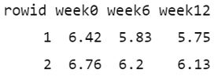
Initially, the cols = starts_with("week") argument specifies which columns from the original data should be pivoted. In this case, it selects the columns that start with the prefix “week”, such as “week0”, “week6”, and “week12”. Additionally, the values in the identifier column (rowid) in the “wide” format are repeated in the “long” format as many times as the number of columns being pivoted, which in this case is three (Figure 10.5).
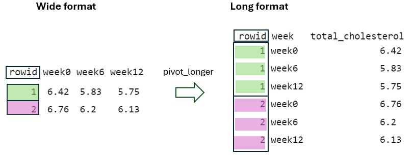
Next, by using the names_to = "week" argument, the column names being pivoted (i.e., week0, week6, and week12) become values within a newly defined variable, week, in the “long” format. These values are repeated as many times as the number of rows in the “wide” format, in this case two, while considering the rowid (Figure 10.6).
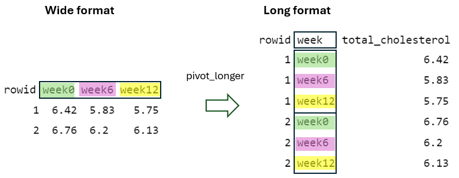
Finally, by using the values_to = "total_cholesterol" argument, the cell values from the pivoted variables are placed into a newly defined variable in the “long” format with the name total_cholesterol, with the rowid and week taken into account (Figure 10.7).
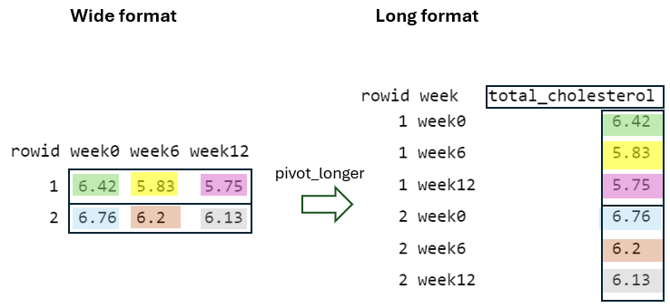
10.5.2 From long to wide format
The pivot_wider() function is essentially the reverse of pivot_longer() function, reshaping data from “long” to “wide” format.
dat_TCH_wide <- dat_TCH_long |>
pivot_wider(id_cols = rowid,
names_from = week,
values_from = total_cholesterol)
dat_TCH_wide# A tibble: 4 × 4
rowid week0 week6 week12
<int> <dbl> <dbl> <dbl>
1 1 6.42 5.83 5.75
2 2 6.76 6.2 6.13
3 3 6.56 5.83 5.71
4 4 4.8 4.27 4.15To better understand the reshaping process of the pivot_wider() function, let’s consider the data of the first two individuals in the “long” format (Figure 10.8):
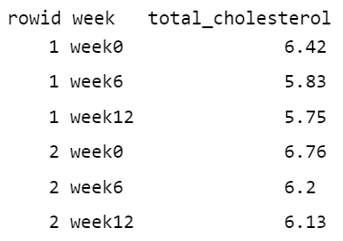
First, in the “wide” format, the rowid column must contain unique values to ensure each row is uniquely identified within the dataset (Figure 10.9). This is achieved by using the argument id_cols = rowid, which specifies that the unique values from the rowid column in the “long” format should be used as the identifier column in the “wide” format.
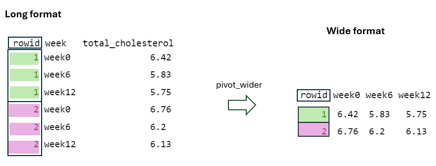
Second, the names_from = week argument specifies that the distinct week values in the “long” format serve as the basis for generating new column names (“week0”, “week6”, and “week12”) in the “wide” format (Figure 10.10).
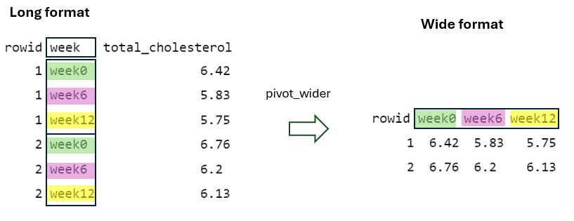
Finally, the values_from = total_cholesterol argument specifies that the total_cholesterol values of the “long” format must be placed into the cells of the new columns in the “wide” format, considering the rowid and week values (Figure 10.11).
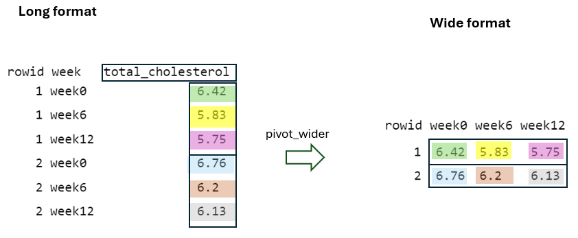